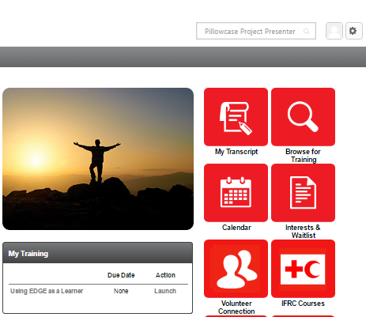
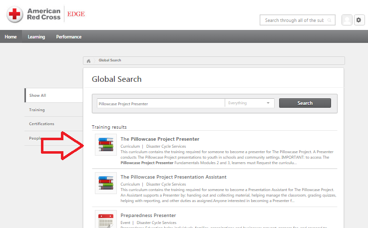
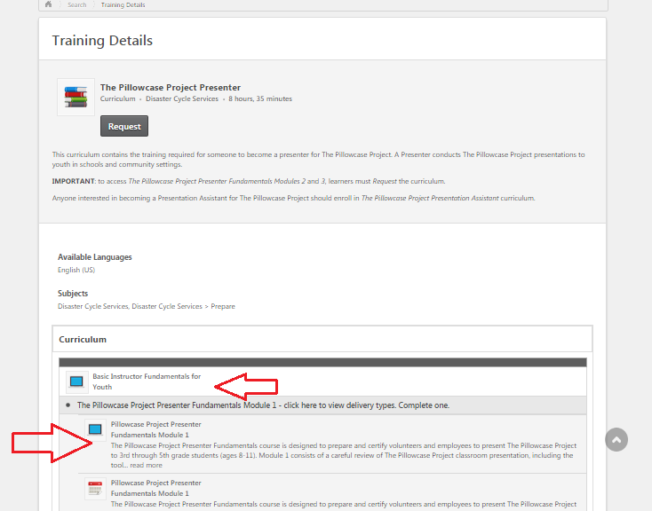
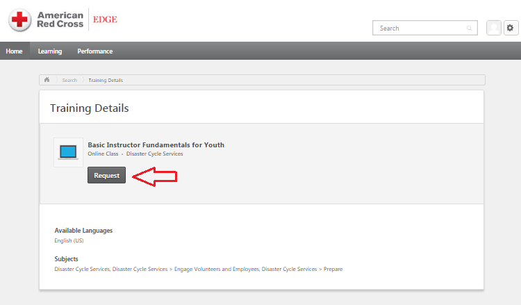
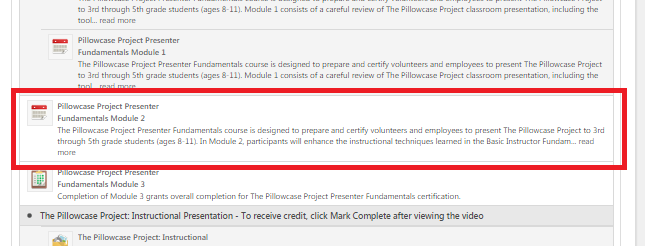
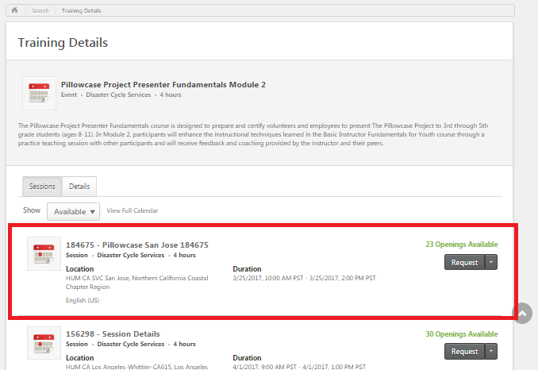

Pillowcase Module 2 - March 25, 2017
On the flyer it said tentative for the Pillowcase Module on March 25th but we will be hosting the event. Anyone interested in being a presenter is required to take two online trainings in order to take the in-person Pillowcase Presenter Module 2.
Setup:
Instructions:
- Once you log into EDGE there is a search bar where you can type in The Pillowcase Project Presenter and it will list the courses that are required to be taken to be a pillowcase presenter.

- Click on The Pillowcase Project Presenter.

- The two online training courses needed to be taken are: Basic Instructor Fundamentals for Youth and Pillowcase Project Presenter Fundamentals Module 1.

- Launch the lesson by clicking "Request".

- Once the online training is completed, you can sign up and register for Pillowcase Module 2 by clicking on Pillowcase Project Presenter Fundamentals Module 2 listed under the Pillowcase Project Presenter Certification on EDGE.

- The link will take you to a list of Pillowcase Module 2 that are occurring all over the U.S. so make sure you register the one in San Jose on 3/25/2017 from 10AM-2PM.
